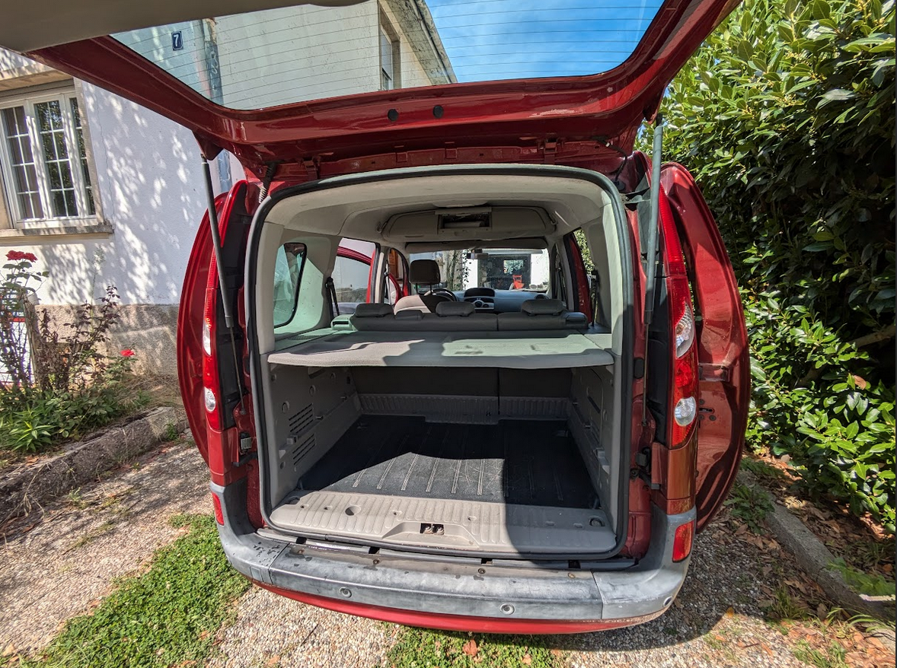
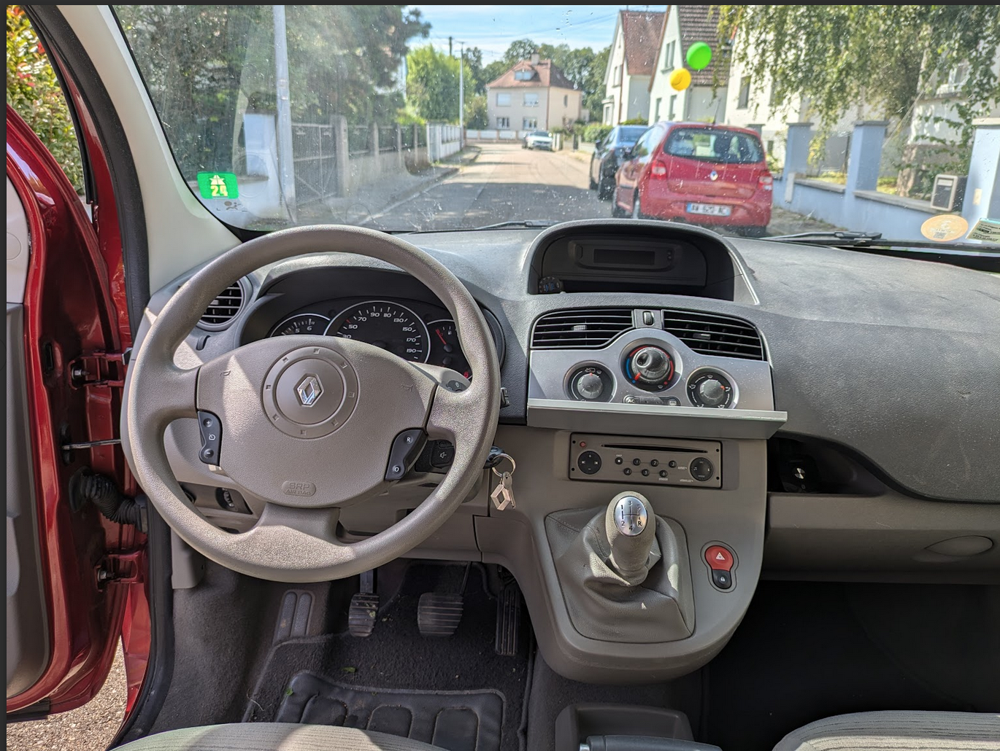
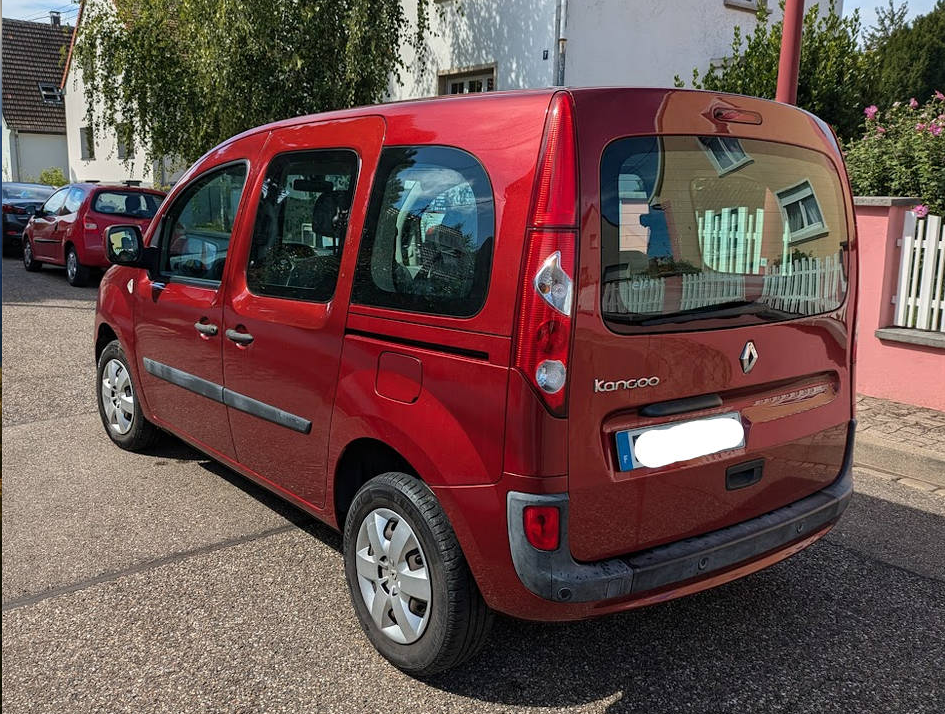
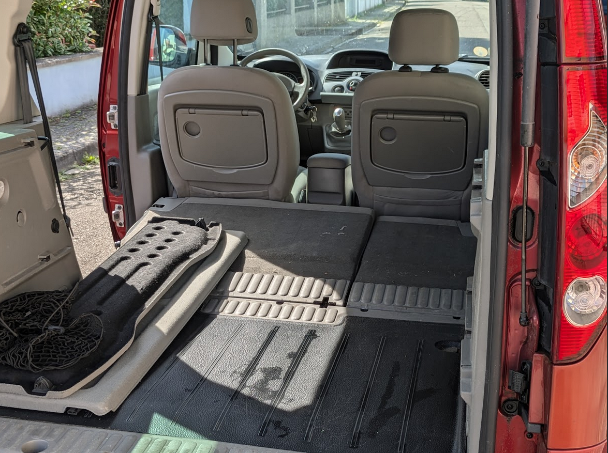

Renault Kangoo II - 100.000 km
Strasbourg • 2008 • 102.000 km • Diesel - 6.500 €
A retrouver sur leboncoin
Table des matières
Description :
Rapport Histovec :
Les éléments rajoutés :
Photos complémentaires :
Extérieur :
Options
Intérieur
Modularité et chargement
Question et réponses :
Y a-t-il des traces de corrosion ?
Le véhicule a-t-il été accidenté ?
Pourquoi y a-t-il eu 2 propriétaires au cours des 7 premiers mois ?
Quelle est la longueur maximale d’un chargement à l’intérieur de la voiture ?
Quels sont les défaut de carrosserie ?
Quels sont les défauts intérieurs ?
Pourquoi ne répondez-vous pas à mes messages ?
Quelle est la consommation du véhicule ?
Quelles sont les dimensions du véhicule ?
Quand pourrais-je voir le véhicule ?
Où peut-on voir le véhicule ?
Description :
Je vends mon Kangoo qui n'a pas beaucoup roulé (il n'a que 100.000 km). Habitant dans l’Eurométropole de Strasbourg, je ne me déplace quotidiennement qu'en transports en commun (train, tramway, bus) ou à vélo.
Je ne me sert de ce véhicule que pour les longs trajets (vacances/week-ends). Pour faire les courses au supermarché du coin, je prends la Twingo de mon épouse.
Je l’ai utilisé en « ludospace ». Sa modularité et sa capacité de chargement sont exceptionnelles. Avec un volume de coffre allant de 660 litres à 2.800 litres, vous pourrez emmener bien plus de bagages qu’avec une voiture traditionnelle (même les gros SUV ne font pas mieux). Lors de vos voyages, plus de problèmes pour charger les valises, la poussette, le lit parapluie, le sac à langer, les jouets des enfants, etc…
Son hayon arrière est très pratique : une fois ouvert, il pourra servir d’auvent pour vous protéger des intempéries, lors de vos pauses au cours de vos trajets.
Les portes coulissantes vous permettront un accès facile aux places arrières ainsi qu’une ouverture facile lorsque le véhicule est stationné en bataille. Vous ne risquez pas de donner des coups de portière aux autres véhicules garés à côté.
Je l'ai acheté à un collaborateur Renault à la retraite, alors que le véhicule n'avait que 7 mois et 2.600 km. On peut donc considérer qu'il s'agit d'une première main.
Régulièrement entretenue chez Renault, toutes les factures des révisions et les différents contrôles techniques sont disponibles. Cela permettra aussi d'attester le kilométrage réel de ce véhicule.
Il s'agit d'une version « privilège » assez optionnée.
- régulateur/limiteur de vitesse (indispensable si vous tenez à garder vos points sur votre permis de conduire)
- climatisation (indispensable avec le réchauffement climatique )
- autoradio CD Bluetooth
- Commandes de l’autoradio au volant
- ordinateur de bord
- support tablette ou téléphone portable sur console centrale.
- direction assistée
- fixation Isofix (très pratique pour vos sièges bébé)
- vitres électriques
- phares antibrouillard (très peu utilisé, quand il fait mauvais temps, je reste à la maison)
- pack city (rétroviseurs rabattable avec système de dégivrage, radar de recul) - utile, même si, comme moi, on ne va pas en ville avec la voiture…
- banquette rabattable 2/3 - 1/3
- siège passager avant rabattable pour chargement sur toute la longueur, vous permettant de transporter des objets de plus de 2,50 m de longueur)
- plancher plat (pour un chargement simple de gros objets)
- roue de secours complète (c’est pas une galette) - jamais utilisée
- peinture métal
- barres de toit
- capucine (grosse possibilité de rangement au-dessus des sièges avants)
- rangement en hauteur à arrière type « aviation ».
- tablettes aviation rabattables aux places arrières pour que vos enfants puissent s’occuper au cours de vos longs trajets.
- tablette de coffre réglable en hauteur. Vous pourrez, grâce à cette option, avoir un coffre sur deux niveaux en séparant les objets fragiles de ceux, moins fragiles ou simplement mieux organiser vos chargements.
Véhicule non fumeur. De plus, il n'a jamais transporté d’animaux (chats, chiens…) Nous n’avons pas d’animaux car ma fille est très allergique aux bêtes à poils.
Moteur diesel DCI 1.5 très économique (avec ma façon de conduire, j’ai une consommation entre 4 et 5 litres au 100km). Il vous permettra de faire plus de 1.200 km avec un seul plein.
La courroie de distribution a été changée à 60.000 km.
Pas de frais à prévoir.
Je m’en sépare car mes enfants sont maintenant grands, et de ce fait, je n’ai plus besoin d’un véhicule avec une capacité de chargement aussi importante.
Rapport Histovec :
https://histovec.interieur.gouv.fr/histovec/rapport-acheteur?key=180ffba1-c66e-4229-a016-36fef3f3ade9
Les éléments rajoutés :
- connexion Bluetooth pour l’autoradio
- support pour tablette ou téléphone portable. Très utile pour mettre le GPS de votre téléphone ou celui d’une tablette. La tablette permettra aussi, via une connexion USB, de gérer l'infotainment de la voiture.

- Prise allume un cigare dans le coffre. Cela permettra de mettre une glacière électrique dans le coffre pour garder vos boissons au frais.
- Prises USB supplémentaires sur le tableau de bord et pour les passagers arrière : pour alimenter le GPS sur votre téléphone, la tablette qui sert à l’infotainment et pour les tablettes et les téléphones portables des enfants à l'arrière.
Photos complémentaires :
Extérieur :
Options
- rangement capucine au-dessus des places avant et coffres aviation aux places arrières
Intérieur

Modularité et chargement
- tablette arrière réglable en hauteur


Question et réponses :
Y a-t-il des traces de corrosion ?
- non : aucune trace de corrosion. Renault a fait beaucoup de progrès sur ce point. Le soubassement est très bien protégé par un revêtement de protection. De plus j’évite de sortir la voiture en hiver lorsque les routes sont salées et je nettoie bien la voiture au Karcher, au printemps pour supprimer toutes les traces de sel.
Le véhicule a-t-il été accidenté ?
- Oui : malheureusement, en juin 2021, un camion derrière moi a eu la mauvaise idée de rouler un peu plus vite que moi et m’a accroché l’aile arrière gauche. Petit choc, que de la tôle froissée, mais en carrosserie les réparations sont toujours très cher. Le kangoo a été réparé dans les règles de l’art dans mon garage, dans lequel j’ai une totale confiance. Les réparations ont été supervisées par un expert en automobile.
Pourquoi y a-t-il eu 2 propriétaires au cours des 7 premiers mois ?
- J’ai acheté le véhicule à un collaborateur Renault à la retraite. Les employés de Renault et les retraités de Renault avaient droit à un nouveau véhicule au tarif “employé” tous les 6 mois. Si j’ai bien compris, le véhicule appartenait à la DIAT (organisme de crédit de Renault) les 6 premier mois. Il comptait donc vendre le Kangoo au bout de 6 mois mais, à cause de la crise de 2008, il n’a pas trouvé d’acheteur dans les délais. Il a donc dû faire immatriculer le véhicule à son nom pour un mois et il ne l’a pas utilisé car il avait déjà été livré du véhicule suivant.
Toujours est-il que j’ai acheté mon Kangoo à un retraité de Renault avec 2600 km au compteur et âgé de 7 mois.
Quelle est la longueur maximale d’un chargement à l’intérieur de la voiture ?
- la partie plate du coffre, lorsque tous les sièges sont baissés, allant de la boite à gants avant au hayon arrière fermé, fait 2m67 (cf photo)
Attention cependant, la boîte à gants n’est pas verticale, si le chargement est plus haut, on peut perdre quelques cm en longueur.
- Si on pose le chargement sur la planche de bord avant (côté passager) on peut facilement transporter un objet ayant 3m de long. (cf photo où on peut voir un rail à placo de 3m de long.

Quels sont les défaut de carrosserie ?
- éraflure sur le pare choc avant : je n’ai malheureusement pas vu un rocher lors d’un stationnement.
- bosse sur le toit au niveau de l’antenne radio. J’avais un chargement sur le toit qui a glissé et qui a atterrit sur le support de l’antenne que j’avais dévissé.
- les enjoliveurs ont quelques éraflures. Mon épouse à quelquefois tendance à se garer trop près du trottoir.

Quels sont les défauts intérieurs ?
- La planche de bord, côté passager, a une éraflure qui est survenue lors d’un déménagement.
- Le soufflet en cuir du levier de vitesse a quelques traces d’usure.


Pourquoi ne répondez-vous pas à mes messages ?
- Etant submergé de demandes, je n’arrive pas à répondre à tous les messages dans des délais raisonnables. Je maintiens ce document qui répond à toutes les questions que j'ai reçues.
Quelle est la consommation du véhicule ?
- Vous trouverez ci-dessous les indications de l’ordinateur de bord. Il s’agit de la synthèse de mon retour de vacances sur un trajet Chambéry-Strasbourg, en traversant la Suisse. Il s’agit d’un trajet principalement sur autoroutes. J’ai toujours roulé aux vitesses maximales autorisées en fonction du trafic. Ma consommation varie habituellement entre 4 et 5 litres/100km. Cela me permet d’avoir une autonomie de plus de 1.200 km avec un seul plein.

Quelles sont les dimensions du véhicule ?
- Vous trouverez ci-joint la page de la brochure Renault présentant toutes les dimensions de mon Kangoo.
Quand pourrais-je voir le véhicule ?
- Je suis en train d’en acheter un nouveau. Je ne veux pas vous faire venir inutilement. Je ne ferais les visites que lorsque j’aurais finalisé l’achat de mon nouveau véhicule.
Où peut-on voir le véhicule ?
- Le véhicule se trouve à Mundolsheim, à 7 km au nord de Strasbourg.